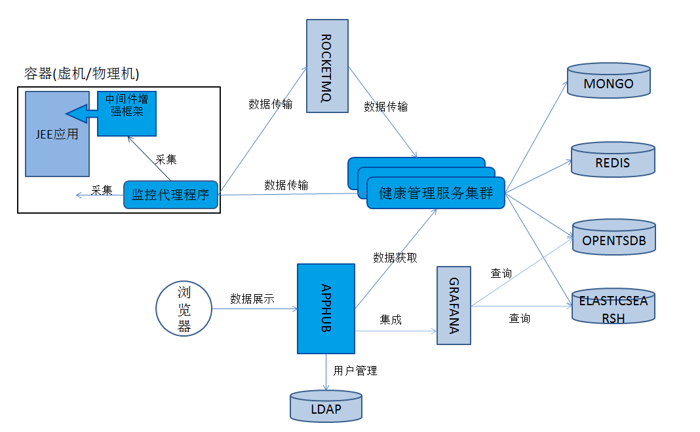

UAV.Monitor+APM

Overview
健康管理服务
健康管理服务(英文名HealthManager，简称HM)是由多个feature组成的数据处理程序，各feature提供了数据分析、存储、查询等功能。
AppHub
AppHub是一个提供数据展示及控制管理功能的JEE应用。
监控代理程序
监控代理程序(英文名MonitorAgent，简称MA)是一个提供数据采集功能和节点容器控制功能的JSE应用，它能采集容器与进程的各项性能指标，及JEE应用的各性能指标，并发送到健康管理服务。
中间件增强框架
中间件增强框架(英文名MonitorFramework，简称MOF探针)通过与JEE中间件集成实现对jee应用的无侵入监控，它采用javaagent机制，提供应用画像，性能数据收集等功能。
术语解释
实时数据
实时数据指JSE、JEE应用的运行时性能数据，包含服务的性能指标(响应时间、访问计数等)，客户端调用的性能指标(响应时间、访问计数等)，JVM的性能指标(GC情况，堆占用等)。
画像数据
画像数据指JSE、JEE应用的描述信息，包含lib引用信息，日志文件信息，服务组件信息，客户端组件信息，溯源感知信息(即访问源信息)。
日志数据
日志数据指JSE、JEE应用的应用日志数据。
APM数据
APM数据指线程分析数据、调用链数据等，这些数据也是通过日志归集得到
容器节点数据
容器节点数据指宿主机的操作系统信息，进程信息，以及MSCP节点信息。